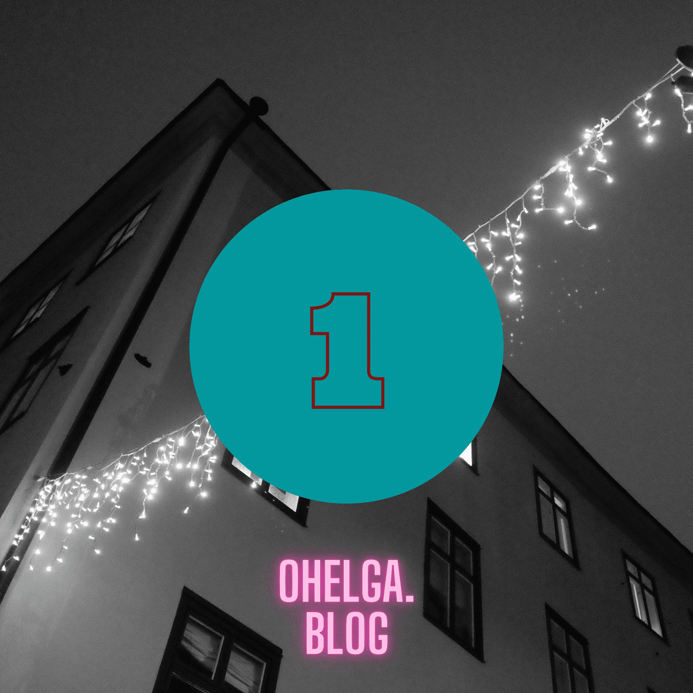

Joulukalenterin ensimmäinen luukku, jossa kuullaan perinteinen brie-versio. Men först får vi höra om sångens bakgrund och på vilket sätt den inte har med Evas pojkvän att göra.
Linkit kappaleeseen:
Apple Music:
O Holy Night- Luciano Pavarotti
Spotify:
O Holy Night - Luciano Pavarotti
Du hittar dem också på vår spellista:

Kommentit / Kommentarer (3)
<p>Kajutan<br/>Bra! Vi kommer att lyssna på alla avsnitt</p>
<p>Kanske lite avmätt version men egentligen borde bara Pavarotti få sjunga den här låten. I alla fall om slutklämmen ska med. </p>
<p>Du måste nog (som du senare också märkte) vänta lite längre än till lucka 1 innan du slår fast favoriten... Men mäktig slutkläm, javisst!</p>